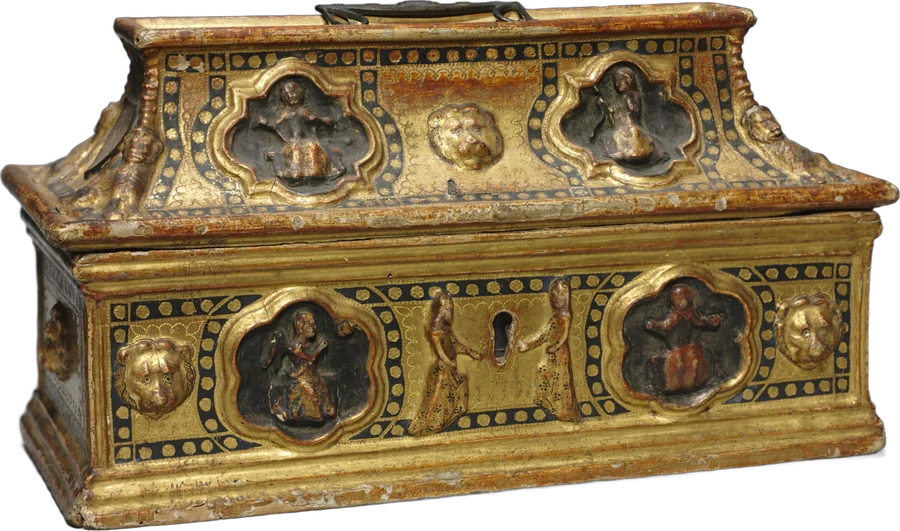

It’s locked.
Five old keys are hidden around the house. You’ve found 0 of them.
- Filed under a quotation.On the home page, the quote has something tucked under it.
- Only visible at 3 a.m.On the anxiety page, take the light around the room.
- Easier to see up close.On the life transitions page, look closely at the floor of the painting.
- Buried in the sand.On the sand tray page, move what’s already in the tray.
- It waits until you slow down.On the mindfulness page, breathe with the lamp a few times.
Stuck? Every clue opens after you find the one before it.

You found the back room.
This is where the inventory lives. Every object in the house is real, and every one has a record somewhere. Here they are.
- CabinetMahogany armoire with glass doors. Paris, about 1785.Musée Carnavalet, Paris
- Peony floor lampClara Driscoll for Tiffany Studios, New York, about 1905 to 1910.Cleveland Museum of Art, 2018.267
- CarpetHerat, Iran, 1500s.Cleveland Museum of Art, 1962.263
- KeyRoman, 1 to 100 CE. Bronze and iron.Cleveland Museum of Art, 1952.586
- Figure of the DancerVincennes Porcelain Factory, France, 1748 to 1752.Cleveland Museum of Art, 1961.10.1
- Self-PortraitJohn Smart, portrait miniature, England, 1802.Cleveland Museum of Art, 1952.95
- The Blue Gown (Portrait of Ethel Coe)Martha S. Baker, portrait miniature, United States, 1899.Cleveland Museum of Art, 1915.142
- Head of a Bearded ManRoman, about 125 CE. Marble.Cleveland Museum of Art, 1924.535
- Statuette of a HorseGreek, 750 to 700 BCE. Bronze.Cleveland Museum of Art, 1998.173
- TeapotNathaniel Hurd, America, about 1755 to 1760. Silver.Cleveland Museum of Art, 1940.228
- Figure of a Bird CharmerSèvres Porcelain Factory, France, 1764 to 1766.Cleveland Museum of Art, 1961.12
- Poppy InkwellClara Driscoll for Tiffany Studios, New York, about 1900.Cleveland Museum of Art, 2018.289
- VaseTiffany Glass and Decorating Company, New York, about 1900.Cleveland Museum of Art, 2018.279
- VaseLouis Comfort Tiffany, New York, about 1905 to 1910.Cleveland Museum of Art, 1997.260
- Two perfume bottlesTiffany Studios, New York, about 1905 to 1910.Cleveland Museum of Art, 1966.379 and 1981.73
- Music BoxSwitzerland or Germany, 1800s.Cleveland Museum of Art, 1925.758
- Potpourri Vase with CoverFrance, about 1750. Porcelain.Cleveland Museum of Art, 1966.233
- EwerJean Baptiste Claude Odiot, France, about 1817. Silver.Cleveland Museum of Art, 1980.183
- InteriorGwen John, 1915.Cleveland Museum of Art
- Portrait of a WomanJean-Marc Nattier, about 1748.Cleveland Museum of Art
- The Artist in His Room at the Villa Medici, RomeLéon Cogniet, 1817.Cleveland Museum of Art
- The Burning of the Houses of Lords and CommonsJ. M. W. Turner, 1835.Cleveland Museum of Art
- Early Morning After a Storm at SeaWinslow Homer, 1900 to 1903.Cleveland Museum of Art
- Twilight in the WildernessFrederic Edwin Church, 1860.Cleveland Museum of Art, 1965.233
- Union caseAmerica, about 1855. The case of an ambrotype portrait.Cleveland Museum of Art, 2022.14
- Card CaseJapan, Meiji period, early 1900s. Ivory.Cleveland Museum of Art, 1945.221
- AlmanacEngland, 1818 to 1830. Agate and gold.Cleveland Museum of Art, 2009.33
- Wall BracketFrance, about 1650 to 1675. Carved and gilt wood.Cleveland Museum of Art, 1989.157
- Ornamental Detail for a KeyholeFrance, mid-1700s. Gilt bronze.Cleveland Museum of Art, 1919.709
- CasketItaly, probably Siena, late 1300s. Painted and gilded gesso on wood.Cleveland Museum of Art, 1954.600
Thanks for poking around. Most of what happens here starts the same way.
One more: type the name on the sign, anywhere in the house.